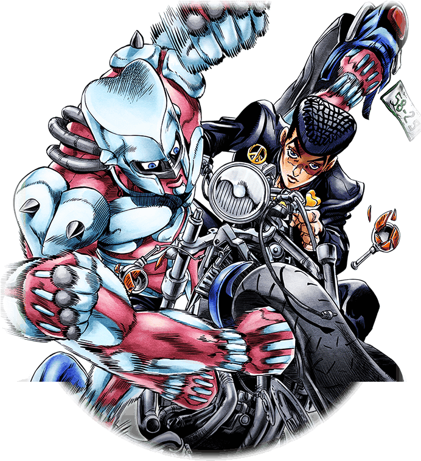
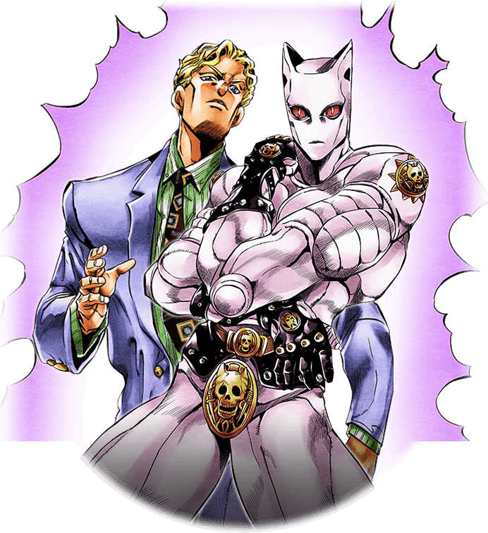

Abertura da Parte 4 Diamond is Unbreakable - Crazy Noise Bizarre Town

Cante Também
Surechigatteku kao no nai shisen
Mune no ana ga kaetetta nichijō
Kyōkai nante naku deau atarimae
no kimyō
U-Yea
Itsumo dōri no asa ga
Uwatsura de warau
Shōtai fumei no mama
Hikareru mistery
Hajimari mo iwazu
jitto hisonderu
Kono machi no dokoka
Dakedo kyō mo jojo ni
Monku nanka iiatte
Nichijō o odoru
Crazy noisy bizarre town
Informações Extras sobre a música
" Crazy Noisy Bizarre Town " é a primeira abertura de Bizarre Adventure de JoJo: Diamond is Unbreakable e a quinta abertura geral do anime Jojo's Bizarre Adventures. A música é tocada pelo grupo THE DU , composto por Jun Shirota, Taisuke Wada e Jeity, com letras de Saori Kodama , composição de Kazuso Oda (Coda) e arranjo de MACARONI ☆. O single foi lançado em 27 de abril de 2016.
Abertura da Parte 4 Diamond is Unbreakable - Chase

Cante Também
Taisetsu na mono wo ubawaresou
Nichijou ni magirekonda akuma
Heion nara tokku ni kuzuresatteru
Nanigenai soshite sarigenai
Kizukanai uchi ni ubawareteita
Torikaeshi ni iku nara ima sa
Tsuranuita ya no you na surudosa de
Butsukeau kokoro wa utsukushii
Dokomademo chase you
Itsumo chase you
Ore wa chase you
Nigeba wa nai
Hashiridase chase you
Asu mo chase you
Tatakitsukete yaru no sa
Shouhai wo wakeru no wa shuunen sa
Dakara I chase you
Informações Extras sobre a música
" chase " é a segunda abertura de JoJo's Bizarre Adventure: Diamond is Unbreakable e a sexta abertura geral do anime JoJo's Bizarre Adventure . A música é tocada e arranjada pelo grupo batta , [4] composto por Tomomori Mano, Asato Shinohara, Takeshi Hoshino e Tatsu Hoshino, que escreveu a letra. O single foi lançado em 27 de julho de 2016.
Uma versão em inglês de "chase" foi incluída como faixa bônus no terceiro álbum da banda, Prelude , lançado em 17 de outubro de 2018.
Shining justice mebaete
Brand new bed town kousa suru ibuki
Misaki kara shiokaze tonneru nuke tettou e hikareai komichi ni mayoikomu
Kokoro ni tokekomu kage terasu ougon no spirits sore wa mamorinuku hikari
Let the voice of love take you higher
Atsumaru chikara de toki sae koete
1999 bizarre summer
Meguru yuuki de ikiru machi great days
Informações Extras sobre a música
" Great Days " é a terceira abertura de JoJo's Bizarre Adventure: Diamond is Unbreakable e a sétima abertura geral do anime JoJo's Bizarre Adventure . A música é tocada pelas vocalistas de jazz Karen Aoki e Daisuke Hasegawa e composta por Yugo Kanno . O single foi lançado em 19 de outubro de 2016.
Uma versão da música tocada por um grupo chamado JO ☆ UNITED, composta por vocalistas de todos os temas de abertura do anime , foi lançada em 24 de dezembro de 2016. Esta versão foi usada para o tema final do episódio final de Diamond is Unbreakable.
 JoJ
JoJ
 fag
O seu JoJosite
fag
O seu JoJosite